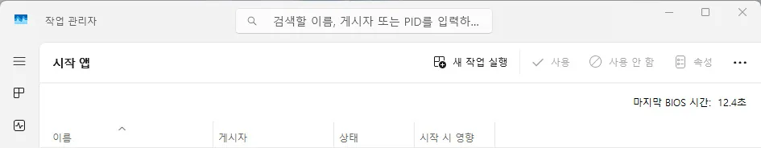

저장장치
NVMe 인식 지연 원인과 점검 순서
부팅이 느리거나 SSD 인식이 지연되는 경우
이 증상은 질문에 답하며 해볼 것을 한 단계씩 따라 할 수 있습니다. 준비물과 자세한 방법을 보여 주고, 직접 하기 어려우면 문의로 이어집니다. 저장장치·자료 자가진단 시작하기 →
NVMe 인식 지연은 부팅 초기에 저장장치가 늦게 잡히거나 아예 한 번씩 놓치는 상황에서 보입니다. SSD 자체가 느린 것이 아니라 슬롯, 펌웨어, 전원 관리가 얽혀 있는 경우가 많습니다.
이 증상은 체감 속도 문제처럼 보여도 실제로는 부팅 안정성과 연결됩니다. 그래서 저장장치 상태와 메인보드 설정을 같이 봐야 합니다.
특정 재부팅에서만 느리다면 접촉, 발열, 펌웨어 순으로 확인하는 것이 좋습니다.
이 가이드가 필요한 상황
- 첫 부팅만 유난히 오래 걸린다.
- 재부팅하면 가끔 SSD가 늦게 잡힌다.
- 윈도우 들어가서도 디스크가 잠시 멈춘 듯하다.
먼저 확인할 항목
- SMART와 건강 상태 확인 — 읽기 실패와 지연은 디스크 상태의 초기 신호일 수 있습니다. 디스크 건강, 온도, 오류 수치를 함께 보세요.
- 슬롯과 케이블 교차 확인 — NVMe 슬롯 접촉이나 SATA 케이블 문제로도 지연이 생깁니다. 다른 슬롯이나 다른 케이블로 바꿔 보세요.
- BIOS 저장장치 모드 확인 — 인식 모드나 부팅 순서가 꼬이면 시작이 늦어질 수 있습니다. BIOS에서 저장장치 모드와 부팅 순서를 다시 봅니다.
- 부팅 시간 분해 확인(작업 관리자 BIOS 시간) — 지연이 펌웨어의 디스크 인식 단계인지 Windows 시작 단계인지 알아야 SSD 쪽인지 소프트웨어 쪽인지 갈립니다. 작업 관리자 → 시작 앱의 '마지막 BIOS 시간'이 수십 초라면 Windows 이전 단계, 짧다면 시작 프로그램·드라이버 쪽을 먼저 보세요(UEFI 방식 PC에서만 표시). 아래는 작업 관리자의 시작 앱 화면에서 마지막 BIOS 시간이 표시되는 위치를 보여 주는 예시로, 이 예시는 12.4초입니다. PC의 시작 앱 목록에는 설치한 프로그램 이름이 나오므로 화면을 공유할 때는 BIOS 시간 부분만 보여 주세요.

원인을 더 정확히 나누는 방법
디스크가 늦게 잡히는 이유
저장장치가 느리다는 말은 실제 성능보다 초기 인식이나 전원 관리가 불안정하다는 뜻일 때가 많습니다. 같은 SSD라도 슬롯 위치, 발열, 펌웨어 버전에 따라 증상이 달라질 수 있습니다.
오래된 M.2 SSD 펌웨어
일부 SSD는 출시 초기 펌웨어에 부팅 인식 지연 버그가 있었고, 이후 제조사가 펌웨어 업데이트로 수정한 경우가 많습니다. 제조사 관리 프로그램(삼성 Magician 등)에서 펌웨어 업데이트가 있는지 확인하고 적용해보세요.
그래픽카드가 M.2 슬롯의 대역폭을 나눠 쓰는 메인보드 설계
일부 메인보드는 특정 M.2 슬롯을 사용하면 그래픽카드 슬롯의 대역폭(PCIe 레인)을 나눠 쓰도록 설계되어 있어, 그 슬롯에 SSD를 꽂으면 인식이 불안정해지거나 부팅이 늦어질 수 있습니다. 메인보드 설명서의 블록 다이어그램에서 레인 공유 여부를 확인하세요.
확인 결과에 따른 다음 단계
- SMART가 정상일 때 — 건강 수치가 좋아도 첫 부팅만 늦다면 슬롯 접촉이나 BIOS 설정 쪽을 먼저 보세요.
- 부팅마다 증상이 바뀔 때 — 가끔 잡히고 가끔 놓친다면 저장장치 자체보다 초기 전원 공급과 연결 상태를 더 의심해야 합니다.
피해야 할 실수
- 윈도우만 재설치하고 저장장치는 그대로 두는 것
- 온도와 슬롯 상태를 같이 보지 않는 것
- SSD 펌웨어 업데이트 여부를 확인하지 않는 것
- 메인보드의 M.2 슬롯별 레인 공유 설계를 확인하지 않는 것
자주 묻는 질문
- SMART가 정상인데도 지연이 있습니다. 그렇다면 슬롯 접촉, 펌웨어, 전원 관리 설정을 더 봐야 합니다. 건강 수치만으로는 초기 인식 문제를 놓칠 수 있습니다.
- SSD 펌웨어는 어떻게 업데이트하나요? 제조사 홈페이지에서 해당 모델의 관리 프로그램(삼성 Magician, WD Dashboard 등)을 내려받아 설치한 뒤, 프로그램 안에서 펌웨어 업데이트 메뉴를 실행하면 됩니다. 업데이트 전 중요한 파일은 미리 백업해두세요.
이 증상과 함께 나타나는 오류 코드
- 0x0000007B · INACCESSIBLE_BOOT_DEVICE
- 0x00000133 · DPC_WATCHDOG_VIOLATION
- 0x00000024 · NTFS_FILE_SYSTEM
- 0x80070570 · 파일이 손상되었거나 읽을 수 없음
- 0x00000077 · KERNEL_STACK_INPAGE_ERROR
최종 검토일: 2026-10-15